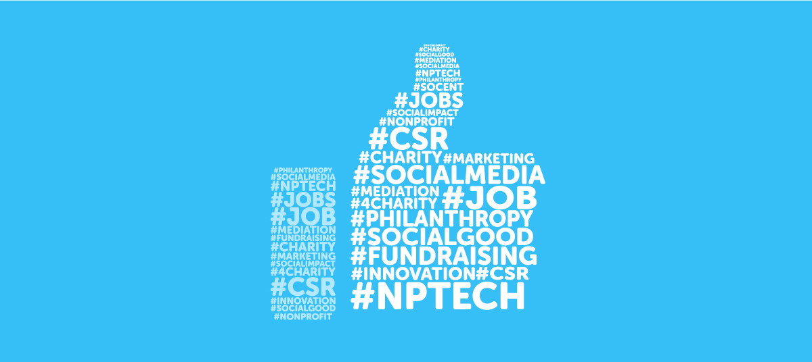

1.Medir y organizar bien los tiempos
Ya sea que quieras usar las redes sociales para socializar o como entretenimiento, hay que tener en cuenta que hay que jerarquizar las prioridades y dividir bien tu tiempo. Entonces si tienes un trabajo que entregar es mejor primero hacer el trabajo y después usar el resto del tiempo restante en las redes si las quieres usar.Sin embargo no hay que dejar de lado otras actividades buenas para tu salud como un hobbie o actividad física, solo es cuestión que organizes y dividas bien tu tiempo para tener una vida equilibrada.

2.No dejar de lado tu salud
No es malo para ti el usar las redes sociales ya que pueden aportar a tu salud social y hasta cierta parte mental al ser una especie de refugio para tu cerebro. Sin embargo, no hay que olvidar cuidar tu salud en general, como lo puede ser el practicar actividades físicas o salir a la calle, ya que el sedentarismo puede ser perjudicial para tu salud cardiovascular, muscular, y para tu metabolismo a futuro.
Otra cosa con la que tener cuidado es con estimular tu cerebro diariamente para tener una buena salud y fortaleza mental, ya que si tu cerebro no trabaja o esfuerza va a terminar deteriorándose peor, y por ende afectar tu salud a largo plazo así mismo como tus estudios.

3.Procurar darle un uso eficiente y productivo a las redes
Aunque no sea malo usar las redes como entretenimiento o para compartir momentos en tu vida, sería bueno que las usaras también para crecer más como persona; tratando de aprender cosas nuevas, buscar información útil para trabajos, ayudar a los demás solucionando preguntas u ofrecerles apoyo en situaciones difíciles, mejorar tus prácticas sociales, o como método de estudio. De esta forma podrás exprimir al máximo lo que las redes te pueden ofrecer aparte de simplemente entretenimiento o matar el tiempo.

4.Ser inteligente a la hora de relacionarse con otros en las redes
Aunque este tema ya sea muy repetitivo, es muy importante, pues es el mayor riesgo que conlleva el usar las redes sociales. Un descuido a la hora de relacionarse con otros puede llevar desde simple acoso o cyberbullying, hasta secuestros y extorsiones con datos personales o de otros.
Para evitar todas estos problemas y riesgos es importante ser precavido con quien te relacionas en las redes, formas de ser precavido podrían ser:
No le des nada de tus datos a personas que no son de confianza
Procura no subir muchos datos personales importantes o de otros a las redes sociales, como lo pueden ser direcciones, edad, número telefónico, o lugares concurrentes.
Si tienes información valiosa como direcciones, secretos, fotos comprometedoras, tarjetas de crédito o cualquier cosa de valor, procura que esté bien protegida para evitar riesgos de filtración, hackeos, o extorsiones.
Si te llegan a acosar o hacer ciberbullying reportalo, bloquealos, e ignoralos, no dejes que te afecte comentarios de gente que ni siquiera te conocen realmente. Acá puedes denunciar el acoso:https://adenunciar.policia.gov.co/adenunciar/Login.aspx?ReturnUrl=%2fadenunciar%2f
Evita el encuentro presencial de personas desconocidas en internet a no ser que tengas la seguridad de saber con certeza quienes en realidad son.

5.No vivas solo en las redes
A la hora de decir que hay cosas con más prioridad que las redes sociales no se trata solo de priorizar los estudios, también hay que tener en cuenta otros aspectos igual o quizá más importantes que el estudio para los jóvenes, como puede ser el pasar tiempo de calidad en familia o con las personas valiosas. Esto es importante ya que no se sabe que pueda pasar y que ya no tengas la oportunidad de compartir tiempo de calidad con aquellos que son más valiosos para ti, así que aprovecha todo el tiempo que puedas con aquellos que más quieres antes que sea muy tarde.

6.Usa las redes responsablemente
Sigue el dicho de no haz lo que no quieras que te hagan, así mismo como no quisieras que se burlen por una foto vergonzosa, o que te lleguen a acosar, entonces no lo hagas, vive y deja vivir. Para poder llegar a tener una sociedad y comunidad sana es necesario del esfuerzo de todos, no es necesario que hagas mucho, solo que a la hora de comentar o dar tu opinión de algo o alguien lo hagas respetuosa y constructivamente para evitar conflictos, malentendidos, y ciclos de odio. Es importante tener ciudadanía digital así mismo como en la vida real. Para que conozcas mas de que es tener ciudadanía digital, lo puedes consultar aquí: https://ciudadaniadigital.mineduc.cl/que-es-la-ciudadania-digital/
